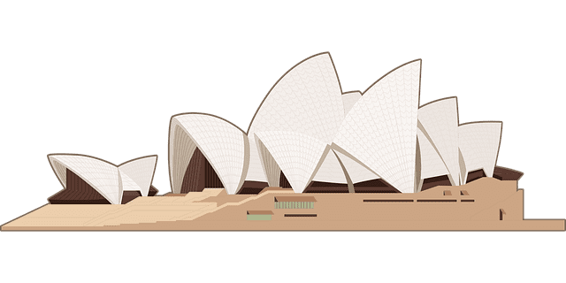

請使用電腦看or手機橫放看
(往下滑)
筱捷，祝妳生日快樂
也沒甚麼能送妳
只能跟往年一樣送卡片
scroll
今年的卡片是一種
叫做「滾動視差」的網頁
意思是：圖片會隨著下滑做出變化
之前看到 Apple 的官網
感覺很有趣，這次就試做了一個看看
loading. . .
時間過得好快，轉眼間過了五年了
妳現在過得開心嗎？

這兩年因為疫情，打亂了很多人的規劃
疫情結束後，妳有想去哪走走嗎？
有想去做甚麼嗎？
有想見的人嗎？
有找到合適的另一半了嗎？
不管妳想做甚麼
都祝妳能順利達成
不過如果是妳的話
應該甚麼都能做到吧
很有行動力的人
筱捷最後祝妳
2
0
2
2
年
生日快樂
祝妳接下來的一年，都能開開心心的
能找到自己想要的目標
希望未來，我們都能成為更好的人
THE EDN